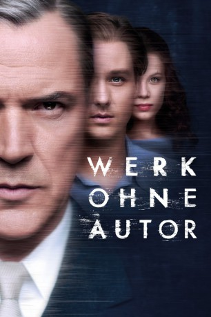

#10919 Werk ohne Autor
Auszeichnungen: für 2 Oscars nominiert
 gesehen am 17.05.2019
gesehen am 17.05.2019
 
 IMDB-Wertung: 7.7 / 10
IMDB-Wertung: 7.7 / 10  Metascore: 69
Metascore: 69 
Auch nach der Flucht in die BRD lassen dem jungen Künstler Kurt Barnert seine Kindheits- und Jugenderlebnisse aus NS- und SED-Zeit keine Ruhe. Als er in der Studentin Ellie die Liebe seines Lebens trifft, gelingt es ihm, Bilder zu schaffen, die nicht nur sein eigenes Schicksal widerspiegeln, sondern die Traumata einer ganzen Generation. Werk ohne Autor - ein epischer psychologischer Thriller über drei Epochen deutscher Geschichte.
Jahr: 2018
Dauer: 189 Minuten
FSK: 12
Land: Deutschland Studio: Walt Disney Studios Motion PicturesTonspuren:
Untertitel: Deutsch,
Auflösung: 1080p (1920x1040) Größe: 9676 MB
Genre: Thriller, Drama, Geschichte
Regisseur: Florian Henckel von Donnersmarck
Drehbuch: Florian Henckel von Donnersmarck
Soundtrack: Max Richter
Darsteller:
 Tom Schilling als Kurt Barnert
Tom Schilling als Kurt Barnert Sebastian Koch als Professor Carl Seeband
Sebastian Koch als Professor Carl Seeband Paula Beer als Ellie Seeband
Paula Beer als Ellie Seeband Saskia Rosendahl als Elisabeth May
Saskia Rosendahl als Elisabeth May Oliver Masucci als Professor Antonius van Verten
Oliver Masucci als Professor Antonius van Verten- Evgeniy Sidikhin als NKWD Major Murawjow
- Ulrike C. Tscharre als Frau Hellthaler
 Hanno Koffler als Günther Preusser
Hanno Koffler als Günther Preusser Jeanette Hain als Waltraut Barnert
Jeanette Hain als Waltraut Barnert Johanna Gastdorf als Großmutter Malvine
Johanna Gastdorf als Großmutter Malvine- Florian Bartholomäi als Günther May
- Jonas Dassler als Ehrenfried May
 Ben Becker als Vorarbeiter Otto
Ben Becker als Vorarbeiter Otto Lars Eidinger als Ausstellungsführer Heiner Kerstens
Lars Eidinger als Ausstellungsführer Heiner Kerstens- Anke Sabrina Beermann als
- Inga Birkenfeld als Krankenschwester Käthe
 Rainer Bock als Dr. Burghart Kroll
Rainer Bock als Dr. Burghart Kroll- Martin Bruchmann als Kunststudent Oskar
 Pit Bukowski als Junger SS-Mann Andreas
Pit Bukowski als Junger SS-Mann Andreas Michaela Caspar als Rundgangbesucherin Frau Rebernik
Michaela Caspar als Rundgangbesucherin Frau Rebernik- Bella Gurevich als Refugee
- Robert Homann-Cauquil als Bus Driver
- Eva Maria Jost als Sekretärin Seeband
- Stefan Mehren als Journalist Jürgen Beier
- Jörg Pose als Volksschuldirektor Tschierswitz
 Rainer Reiners als Rundgangbesucher Herr Rebernik
Rainer Reiners als Rundgangbesucher Herr Rebernik Chris Theisinger als SS Arzt
Chris Theisinger als SS Arzt- Oleg Tikhomirov als Sowjetischer Aufseher Sergei
- Mandy M. Haupert als East German Traveller (uncredited)
- Cai Cohrs als Kurt Barnert 6 Jahre
- Ina Weisse als Martha Seeband
- Mark Zak als Dolmetscher Murawjow
- Bastian Trost als Hausarzt Dr. Franz Michaelis
- Hans-Uwe Bauer als Professor Horst Grimma
- David Schütter als Adrian Schimmel / Finck
- Franz Pätzold als Max Seifert
- Hinnerk Schönemann als Werner Blaschke
- Jörg Schüttauf als Johann Barnert
- Johannes Allmayer als
- Bruno F. Apitz als Würdenträger Eser
- Martin Baden als Arbeitermodell Udo
- Antonia Bill als Krankenschwester Anna
- Viktor Bleischwitz als NKWD-Offizier
- Lutz Blochberger als Würdenträger Schon
- Christian Donner als
- Matthi Faust als Heinz Viersen
- Luc Feit als Hermann Schreiber
- Konstantin Frolov als Serschant Borisow
- Zviad Gamsachurdia als Student
- Sven Gerhardt als SS-Arzt Franck
Datei: X:\2018(N-Z)\Werk ohne Autor (2018, FSK12, 1920x1040).mkv seit 03.04.2019
Festplatte: HD 2018(G-Z)-2019(A-Z)
 Es gibt insgesamt 172 Filme in der Gruppe '2018(N-Z)'
Es gibt insgesamt 172 Filme in der Gruppe '2018(N-Z)'